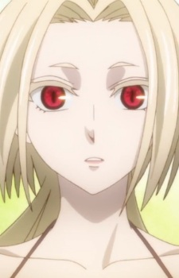

|
Anya Hepburn |
|
Anya Hepburn is a new meister at DWMA. She came to the DWMA to escaped her castle. Anya is stuck-up, proud and princess-like but can cold, unfriendly and haughty. She is not-willing to amke friendly talk. She is naive in some situations. |
 |
Archer of Red |
|
Archer of Red is the Archer-class servant of Shirou Kotomine of Red Faction in the Great Holy War. Archer's identity is Atalanta, the Chaste Huntress in Greek mythology. She has the same egotism and view on life and death as a wild animal. Atalanta is stubborn becuase of her salvation of all children in the world. She likes children and would dislike those who children. |
 |
Emi Igawa |
- Your Lie in April
- Your Lie in April OVA
|
Emi Igawa is one of the best middle school pianist. She is known to play to her emotions. She got passion to play piano after Kousei performance. |
 |
Kagura Mikazuchi |
- Fairy Tail
- Fairy Tail (2014)
|
Kagura Mikazuchi is a Mage from the guild Mermaid Heel. She is a young, slim, large - busted woman with long, straight black hair that falls to the middle of her back. She gives off a very calm and relaxed nature. She specializes in Gravity magic and Sword Fighting. |
 |
Misaki Yuki |
|
Misaki Yuuki or Sharyuu is the warrior of the Monkey. Sharyuu is a pacifist. She kills peacefully. |
 |
Miyuki Shiba |
- The Irregular at Magic High School
- The Irregular at Magic High School: Get to Know Magic Studies!
- The Irregular at Magic High School The Movie - The Girl Who Summons The Stars
|
Miyuki Shiba is a first year student in Course 1 of First High School. She is the twin to Tatsuya Shiba. She is currently the freshmen representatives and well known in the school. She is describe as beautiful, modst and kind. She has a warm and loving nature. |
|  |
Redcurrant |
|
Redcurrant is a leannan Sidhe that watches over Joel Garland's Household. She floats around Joel, observing his notes. |
| |
Sachi |
- Sword Art Online
- Sword Art Online: Extra Edition
|
Sachi is a member of the guild Black Cats of Full Moon. She was part of a computer research club at her school. She is social awkard like Kirito. |
 |
Shouko Nishimiya |
|
Shouko Nishimiya is a young, deaf transfer student with an amazing positive outlook on life. She always keep a smile on her face. |
 |
Therese Alexanderite |
- The Rising of the Shield Hero
|
Therese Alexanderite is the companion of L'Arc Berg. Compare to her companion, she is serious. She is quiet and conducted herself with the deference and courtesy. She is very fond of her gemstones and caring of there feelings. |